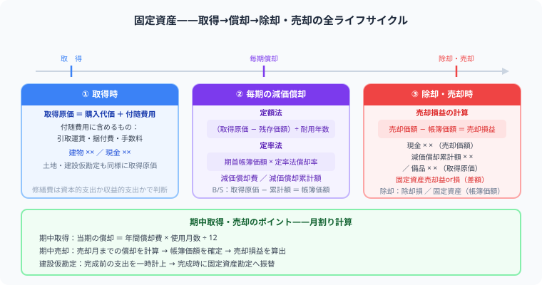
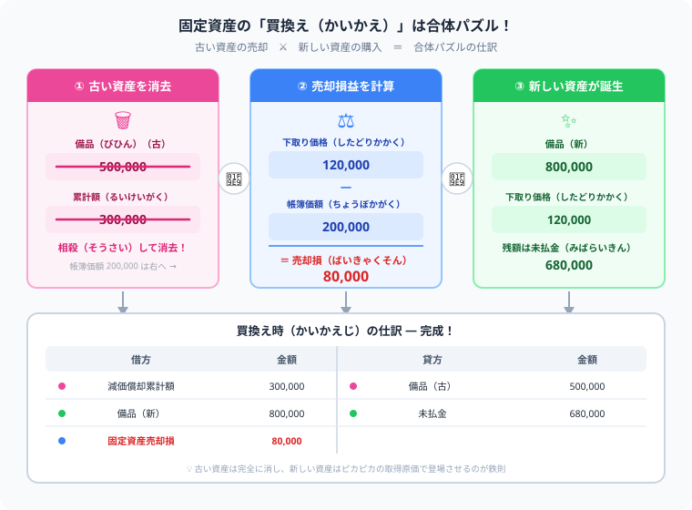

簿記2級の固定資産とは？
減価償却・除却・売却の仕訳を解説
こんにちは、大谷です！
実は、今回紹介する固定資産の「定率法」や「期中売却」という論点は、僕が大学の講義内で初めて学んだとき、「うわっ、なんじゃこりゃ……！」と頭を抱えて激しくつまずいた大嫌いな論点でした（笑）。
だからこそ、当時の僕と同じように悩んでいる皆さんに、どこよりも直感的にパズル感覚で理解してもらえるよう、僕なりの分かりやすい攻略法をお届けします！
また、モチベーション維持のために、記事の末尾のほうにある【いいねボタン】をポチッと押してもらえると、めちゃくちゃ励みになりますしすごく嬉しいです！
固定資産は、簿記3級でも学ぶ論点ですが、簿記2級では定率法、除却、廃棄、売却、買換えに近い判断まで問われやすくなります。ポイントは「取得原価を決める」「使った分を減価償却する」「手放すときに帳簿価額を消す」の3段階です。
2026年度の出題範囲は変更ありません。ただし2027年度から、この記事で扱う「定率法」と「固定資産の除却・廃棄」が2級から3級に移行することが日本商工会議所から公式に発表されています。2級では今後、より発展的な処理（買換えなど）が中心になっていく見込みです。2026年度内に受験予定の方は、この記事の内容のまま学習を進めて問題ありません。
固定資産とは

固定資産は「取得原価をどう決めるか」「毎期の償却をどう計算するか」「売却時の損益をどう出すか」の3段階を押さえれば得点できます。
固定資産とは、建物、備品、車両運搬具、機械装置など、長期間使うために保有する資産です。販売目的の商品とは違い、事業で使い続けるために持っています。
固定資産は、購入した年だけでなく複数年にわたって役立つため、購入額をすぐ全額費用にせず、使用期間に分けて費用化します。この費用化が減価償却です。
固定資産の処理の全体像
取得原価に含めるもの
固定資産の取得原価には、購入代価だけでなく、その資産を使える状態にするための付随費用も含めます。
| 項目 | 取得原価に含めるか |
|---|---|
| 購入代価 | 含める |
| 購入手数料 | 含める |
| 据付費・試運転費 | 含める |
| 登録料・運送費 | 使用可能にするためなら含める |
| 修繕費 | 通常の維持管理なら費用処理 |
取得時の仕訳
備品500,000円を購入し、据付費20,000円とともに現金で支払った場合、取得原価は520,000円です。
| 借方 | 金額 | 貸方 | 金額 |
|---|---|---|---|
| 備品 | 520,000 | 現金預金 | 520,000 |
減価償却とは
減価償却とは、固定資産の取得原価を、使用する期間にわたって費用配分する処理です。簿記2級では定額法と定率法を中心に押さえます。
| 方法 | 特徴 |
|---|---|
| 定額法 | 毎年同じ金額を減価償却費にする |
| 定率法 | 期首帳簿価額に一定率をかけるため、初期ほど費用が大きい |
定額法の計算
取得原価500,000円、残存価額0円、耐用年数5年の場合、定額法の減価償却費は毎年100,000円です。
| 借方 | 金額 | 貸方 | 金額 |
|---|---|---|---|
| 減価償却費 | 100,000 | 減価償却累計額 | 100,000 |
定率法の計算
定率法では、期首帳簿価額に償却率をかけます。取得原価500,000円、期首減価償却累計額100,000円、償却率40%の場合を例に、なぜ「引き算が最初」なのかから順番に確認しましょう。
定率法は、まだ費用にしていない【残りの価値＝未償却残高】に償却率をかけるルールです。「取得したときの全額（取得原価）」ではなく、「これまで費用にした分（累計額）を引いた残り」が計算のスタート地点になります。だから必ず、最初に累計額を引き算するパズルになるんです。
取得原価 500,000 － 減価償却累計額 100,000 ＝ 未償却残高 400,000円
STEP ② 未償却残高に償却率をかける
400,000円 × 40% ＝ 当期減価償却費 160,000円
定率法で「500,000 × 40% = 200,000」としてしまうのが最もよくあるミスです。定率法は未償却残高（累計額を引いた後の金額）に率をかけます。定額法との混同に注意してください。
| 借方 | 金額 | 貸方 | 金額 |
|---|---|---|---|
| 減価償却費 | 160,000 | 減価償却累計額 | 160,000 |
除却・廃棄とは
除却とは、固定資産を事業で使わなくなり、帳簿から外す処理です。廃棄した場合や、使用をやめて処分を待つ場合に出てきます。
除却では、固定資産の取得原価と減価償却累計額を消し、帳簿価額が残っていれば固定資産除却損として処理します。
除却の仕訳
取得原価500,000円、減価償却累計額420,000円の備品を除却した場合、帳簿価額80,000円が損になります。
| 借方 | 金額 | 貸方 | 金額 |
|---|---|---|---|
| 減価償却累計額 | 420,000 | 備品 | 500,000 |
| 固定資産除却損 | 80,000 |
売却の考え方
固定資産を売却したときは、売却額と帳簿価額を比べます。売却額が帳簿価額より高ければ固定資産売却益、低ければ固定資産売却損です。
売却損益 = 売却額 - 帳簿価額
売却の仕訳
取得原価500,000円、減価償却累計額300,000円の備品を150,000円で売却し、代金は現金で受け取ったとします。帳簿価額は200,000円なので、50,000円の売却損です。
| 借方 | 金額 | 貸方 | 金額 |
|---|---|---|---|
| 現金預金 | 150,000 | 備品 | 500,000 |
| 減価償却累計額 | 300,000 | ||
| 固定資産売却損 | 50,000 |
売却額が250,000円なら、帳簿価額200,000円との差額50,000円が固定資産売却益になります。
期中売却に注意
期中に固定資産を売却した場合、売却日までの減価償却費を月割りで計上してから売却仕訳を作ります。この「2段階の順番」を守るだけで、どんな問題でも確実に解けるようになります。
売却日が期中の場合、いきなり売却仕訳を書いてはいけません。期首から売却日までの減価償却費を一番最初に計算して計上してから、売却仕訳を作るのが正しい順番です。
月割計算の手順（具体例）
取得原価600,000円・定額法・耐用年数5年・残存価額0円。期首時点の減価償却累計額240,000円の備品を、当期の期首から4ヶ月後に250,000円（現金）で売却した場合。
年間償却費：600,000 ÷ 5年 ＝ 120,000円
当期月割：120,000 × 4ヶ月 ÷ 12ヶ月 ＝ 40,000円
借方：減価償却費 40,000 ／ 貸方：減価償却累計額 40,000
600,000 − (240,000 ＋ 40,000) ＝ 帳簿価額 320,000円
借方：現金250,000 ＋ 減価償却累計額280,000 ＋ 固定資産売却損70,000 ／ 貸方：備品600,000
売却時の仕訳（STEP ④）
| 借方 | 金額 | 貸方 | 金額 |
|---|---|---|---|
| 現金預金 | 250,000 | 備品 | 600,000 |
| 減価償却累計額 | 280,000 | ||
| 固定資産売却損 | 70,000 |
固定資産の「買換え」は合体パズル！

簿記2級で受験生を最も悩ませるのが、古い固定資産を下取りに出して新しい固定資産を手に入れる「買換え（かいかえ）」の論点です。問題文に大量の数字が出てくるためパニックになりやすいですが、本質は【古い資産の売却】と【新しい資産の購入】がガチャンと合体しただけのパズルです。
古い資産の下取り価格（引き取ってもらった値段）は、実質的に「その金額で古い資産を売った（売却額）」のと同じ意味になります。この考え方1つで買換えの仕訳が一気にシンプルになります。
買換えの4ステップ手順（具体例）
「取得原価500,000円・期首累計額300,000円（帳簿価額200,000円）の古い備品」を【下取り価格120,000円】として引き取ってもらい、新たに「800,000円の新しい備品」を購入した。差額は後日支払う（未払金）とする（※期首の買換えとする）。
いつも通り、古い備品500,000を貸方（右）へ、累計額300,000を借方（左）に書く。
新しく手に入った備品800,000を借方（左）にどかんと書く。
古い資産の帳簿価額は200,000円（500,000 − 300,000）。これを120,000円で下取り（売却）してもらったので、80,000円の損になる。借方に固定資産売却損 80,000と書く。
新しい備品代800,000円から、下取り代金120,000円を差し引いた残り680,000円を貸方に未払金として計上してパズルが完成！
買換え時の仕訳（STEP ①〜④）
| 借方 | 金額 | 貸方 | 金額 |
|---|---|---|---|
| 減価償却累計額 | 300,000 | 備品（古） | 500,000 |
| 備品（新） | 800,000 | 未払金 | 680,000 |
| 固定資産売却損 | 80,000 |
「差額の300,000円だけ備品を増やせばいいや」と借方に備品 300,000などと書くのは絶対NGです！
古い資産の歴史（取得原価と累計額）を完全に消し去り、新しい資産の取得原価をピカピカの状態で登場させるのが簿記2級の大原則です。「合体だけど、内訳はちゃんと全部書く」を徹底してください。
よくあるミス
- 付随費用を費用処理してしまい、取得原価に入れ忘れる
- 定率法で取得原価に償却率をかけてしまう
- 売却時に減価償却累計額を消し忘れる
- 売却額と取得原価を比べて売却損益を出してしまう
- 期中売却で売却日までの減価償却を忘れる
まとめ
- 固定資産は、長期間使うために保有する資産
- 取得原価には、使用可能にするための付随費用を含める
- 減価償却は、固定資産の取得原価を使用期間に配分する処理
- 除却では、帳簿価額を固定資産除却損にする
- 売却では、売却額と帳簿価額の差額を固定資産売却損益にする